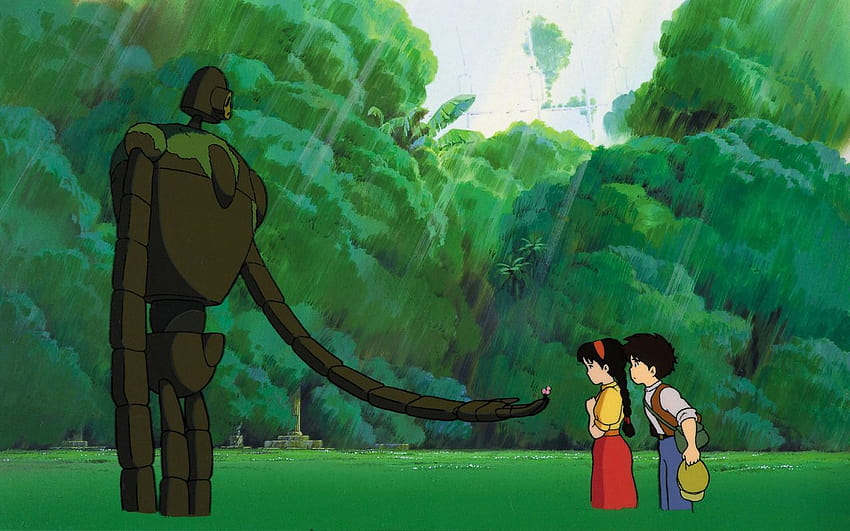

Home
Il Castello nel Cielo - Laputa
Next

Un'aeronave viene attaccata da un gruppo di pirati dell'aria, comandati da una combattiva megera di nome Dola. A bordo dell'aeronave c'è una ragazzina prigioniera, Sheeta, circondata da uomini vestiti di nero. I pirati mirano al ciondolo della ragazza, che chiamano gravipietra. Durante l'arrembaggio Sheeta riesce a liberarsi dai suoi carcerieri, ma per sfuggire ai pirati esce dal finestrino dell'aeronave e precipita. Prodigiosamente, la pietra al suo collo si accende di una luce azzurra e rallenta la sua caduta fino ad atterrare dolcemente tra le braccia di un ragazzo orfano, Pazu, operaio in una miniera. Dopo averla soccorsa, Pazu la porta a casa sua, dove vive da solo coi suoi colombi. I due fanno amicizia, e Pazu racconta alla ragazza di Laputa, una leggendaria città-castello volante che viaggia nel cielo da centinaia di anni nascosta dalle nuvole. In pochi credono alla esistenza del castello, ma Pazu ne è convinto
perché suo padre, anni addietro, riuscì a fotografare parte dell'imponente struttura durante una rischiosa manovra aerea. Tuttavia i pirati scoprono il nascondiglio di Sheeta e i due ragazzi riescono a salvarsi scappando verso il villaggio di minatori, dove nasce una rissa tra i pirati e le maestranze, determinate a difendere il ragazzino e la sua amica. Pazu e Sheeta continuano a scappare su un piccolo treno inseguiti continuamente da Dola ed i suoi, fino al sopraggiungere dell'esercito, che scaccia i pirati, ma che si rivela al servizio dello stesso uomo, il colonnello Muska, che teneva prigioniera la ragazza sull'aeronave all'inizio della storia. Ostacolandosi a vicenda, pirati ed esercito consentono a Pazu e Sheeta di fuggire. I ragazzi si nascondono nelle miniere dove incontrano un vecchio minatore, Nonno Pon, il quale racconta loro l'origine della gravipietra: soltanto il popolo di Laputa era capace di estrarre e
lavorare il minerale e quindi è da lì che la pietra proviene. Sheeta rivela a Pazu il suo nome completo, un nome segreto: Lusheeta Toel Ul Laputa. All'uscita dalle miniere tuttavia Muska riesce a far arrestare i due ragazzi che vengono internati in una fortezza dell'esercito. Rinchiuso Pazu in una segreta, i militari si consultano con Muska su come ottenere la collaborazione della ragazza. I primi sarebbero per le maniere forti, ma l'agente, che rivela di avere protettori molto in alto nel governo, ritiene di poter ottenere da Sheeta le informazioni di cui sono in cerca sfruttando l'amicizia fra lei e Pazu. Viscidamente, Muska mostra a Sheeta un robot-soldato precipitato da Laputa, che possiede lo stesso marchio inciso sul ciondolo della ragazza: lei, infatti, è l'erede al trono di Laputa. A quel punto capisce che alcune formule magiche imparate da bambina in realtà sono comandi coi quali la gravipietra mostra il suo potere,
assieme a una terribile parola di distruzione da non usare mai. Muska convince Sheeta a collaborare offrendole in cambio la libertà di Pazu. La ragazza accetta e il giovane, affranto e abbattuto, fa ritorno al villaggio, dove trova la casa occupata dai pirati. Mentre in un confronto con la vecchia piratessa Dola il ragazzo si risolve a seguire i pirati per riprendersi indietro Sheeta, questa attiva involontariamente la gravipietra, che richiama il robot-soldato. La macchina da guerra si scatena e spazza via ogni ostacolo per raggiungere la sua padroncina. La manifestazione dell'enorme potere tecnologico di Laputa viene accolta dai militari con terrore, ma da Muska con entusiasmo. Pazu e i pirati nel frattempo accorrono alla fortezza, che trovano in fiamme per la terribile reazione del robot. I pirati e Pazu, sui flapper (piccole macchine volanti biposto dotate di ali simili a quelle di una libellula) riescono a salvare la
ragazza che però perde la pietra, mentre il robot viene alla fine abbattuto dall'esercito, resistendo stoicamente nel tentativo di salvare Sheeta, inizialmente terrorizzata dalla macchina, ma poi commossa dal sacrificio del robot. Muska riesce a recuperare la pietra, con la quale può individuare la posizione di Laputa e fa mobilitare all'esercito un'enorme corazzata volante, Goliath. Dal canto loro i pirati si uniscono ai due ragazzi nella corsa per arrivare a Laputa. Sheeta e Pazu entrano nell'equipaggio della nave pirata, la Tiger Moth, guadagnandosi la stima dei malviventi, che si dimostrano essere dei buoni diavoli che subito si affezionano ai ragazzi. Finalmente le due navi giungono in vista dell'isola nel cielo, nascosta da una gigantesca nuvola. Pazu e Sheeta vi arrivano in un incidente con l'aliante-coffa su cui stavano in osservazione, che viene strappato alla nave-madre Tiger Moth. I due scoprono che la città è oramai
deserta, ed è diventata un giardino con al centro un immenso albero, il tutto manutenuto da un solitario robot-giardiniere, ultimo sopravvissuto della sua categoria, una macchina gentile che cura animali e piante e onora la tomba degli ultimi abitanti di Laputa. Poco dopo però i due ragazzi, avvertiti dal rumore di esplosioni, scoprono che sull'isola volante sono attraccati anche la Goliath e la nave pirata, il cui equipaggio è stato arrestato. Nel tentativo di liberarli Muska riesce a catturare Sheeta e la conduce nelle viscere dell'isola volante, dove rivela d'essere anch'egli un discendente della casata reale di Laputa. Mentre i soldati si danno al saccheggio delle immani ricchezze dell'isola, Muska trova il centro di comando e scatena le tecnologie perdute di Laputa con la pietra. Si scopre infine che Laputa è anche una gigantesca arma con potenzialità di distruzione ben maggiori di quelle di una bomba atomica, nonché responsabile,
nell'antichità, di avere raso al suolo intere città (tra cui Sodoma e Gomorra). È probabile che l'ultima famiglia reale, resasi conto delle colpe e delle disgrazie causate al mondo, decise di abbandonare l'isola insieme ai suoi abitanti e di vivere sulla terra per evitare che qualcun altro usasse per scopi malvagi la scienza di Laputa. Una dimostrazione della potenza delle armi di Laputa convince il Generale che Muska intende effettuare un colpo di stato, e, tardivamente, cerca di eliminarlo, ma questi, nel suo delirio d'onnipotenza, lo fa precipitare nel vuoto assieme a decine di soldati, contro i quali poi scaglia i robot da combattimento. Sheeta allora strappa la pietra al folle Muska, ma non può evitare l'insensata orgia di distruzione in cui tutti i militari vengono massacrati e la Goliath affondata. Pazu finalmente raggiunge Muska e Sheeta, e la ragazza riesce a consegnargli la pietra. Muska minaccia di uccidere Sheeta se Pazu non dovesse dargli la gravipietra, ma il giovane riesce a metterla in mano alla ragazza e insieme pronunciano la terribile parola di distruzione con cui il cuore tecnologico di Laputa si disintegra, e la gigantesca gravipietra che sosteneva Laputa si trasferisce nel tronco dell'albero gigante. Muska precipita coi frammenti dell'isola volante mentre i ragazzi si salvano protetti dalle radici del gigantesco albero. Persi per sempre i suoi terribili segreti tecnologici, Laputa, liberata da quel peso, vola via con l'ultimo robot-giardiniere, mentre Pazu e Sheeta vengono recuperati dai pirati di Dola che sono infine riusciti a mettere le mani su un bel po' di gioielli. Avvicinatisi alla terra ferma, i due gruppi si salutano felicemente, poi Pazu e Sheeta volano via con l'aliante coffa mentre i pirati sui flapper partono verso la loro successiva avventura.